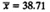
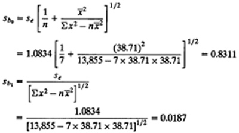
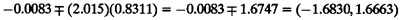
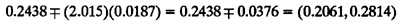
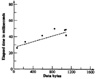
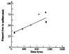

| Previous | Table of Contents | Next |
Example 14.4 For the disk I/O and CPU data of Example 14.1, we have n = 7, , ςx2 = 13,855, and se = 1.0834. Using these values, the standard deviations of b0 and b1, are

From Table A.4 in the Appendix, the 0.95-quantile of a t-variate with five degrees of freedom is 2.015. Therefore, the 90% confidence interval for b0 is

Since the confidence interval includes zero, the hypothesis that this parameter is zero cannot be rejected at the 0.10 significance level. In simple terms, b0 is essentially zero.
Similarly, the 90% confidence interval for b1 is

Since the confidence interval does not include zero, the slope b1 is significantly different from zero at this confidence level.
Case Study 14.1 The performance of a remote procedure call (RPC) mechanism was compared on two operating systems named UNIX and ARGUS. The performance metric was total elapsed time, which was measured for various data sizes. The measurements are shown in Table 14.2. The scatter diagrams of the two data sets along with the regression lines are shown in Figures 14.3 and 14.4 for UNIX and ARGUS, respectively. Notice that for large data sizes the variance of both data sets is large. This is because ARGUS measurements are affected by the garbage collection and UNIX measurements are affected by a page optimization technique that avoids copying of complete data pages by mapping the pages from the input buffer into the kernel instead of the normal copying. Ignoring this discrepancy for the moment, the best linear models are
Time on UNIX = 0.030 (data size in bytes) + 24
Time on ARGUS = 0.034 (data size in bytes) + 30
| TABLE 14.2 Measured RPC Times on UNIX and ARGUS | |
|---|---|
| UNIX | ARGUS |
| Data Bytes | Time | Data Bytes | Time | |
|---|---|---|---|---|
| 64 | 26.4 | 92 | 32.8 | |
| 64 | 26.4 | 92 | 34.2 | |
| 64 | 26.4 | 92 | 32.4 | |
| 64 | 26.2 | 92 | 34.4 | |
| 234 | 33.8 | 348 | 41.4 | |
| 590 | 41.6 | 604 | 51.2 | |
| 846 | 50.0 | 860 | 76.0 | |
| 1060 | 48.4 | 1074 | 80.8 | |
| 1082 | 49.0 | 1074 | 79.8 | |
| 1088 | 42.0 | 1088 | 58.6 | |
| 1088 | 41.8 | 1088 | 57.6 | |
| 1088 | 41.8 | 1088 | 59.8 | |
| 1088 | 42.0 | 1088 | 57.4 | |

FIGURE 14.3 Scatter plot of the UNIX data.

FIGURE 14.4 Scatter plot of the ARGUS data.
| TABLE 14.3 Confidence Intervals for Regression Coefficients for RPC Study | |
|---|---|
| UNIX | ARGUS |
| Param- eter | Mean | Std. Dev. | Confidence Interval | Param- eter | Mean | Std. Dev. | Confidence Interval | |
|---|---|---|---|---|---|---|---|---|
| b0 | 26.898 | 2.005 | (23.2968, 30.4988) | b0 | 31.068 | 4.711 | (22.6076, 39.5278) | |
| b1 | 0.017 | 0.003 | (0.0128, 0.0219) | b1 | 0.034 | 0.006 | (0.0231, 0.0443) | |
The regressions explain 81 and 75% of the variation, respectively. Without considering the variance, one might be tempted to conclude that ARGUS takes larger time per byte as well as a larger setup time per call than UNIX. However, a careful analyst would make conclusions only after looking at the confidence intervals for the regression coefficients. The 90% confidence intervals are listed in Table 14.3.
Notice that intervals for intercepts overlap while those of the slopes do not. Thus, at this level of confidence, one can conclude that the setup times are not significantly different in the two systems while the per-byte times (slopes) are different. Even these conclusions are somewhat weak since the variance is not constant throughout the range of measurements.
| Previous | Table of Contents | Next |
){kind=link}
){kind=link}
){kind=link}
){kind=link}